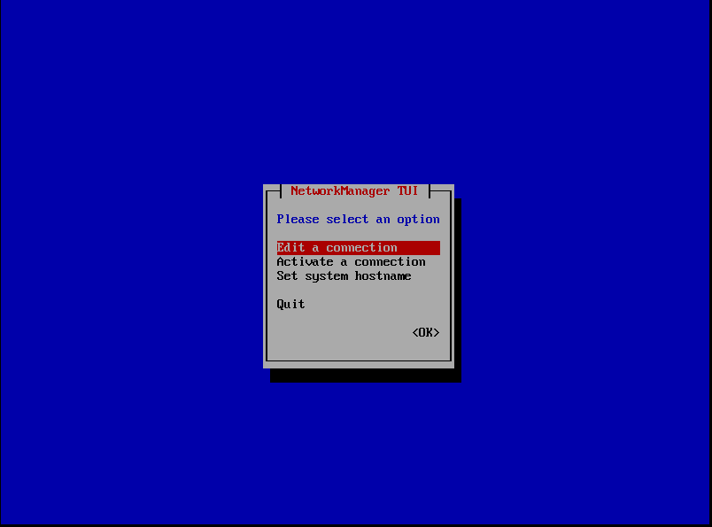
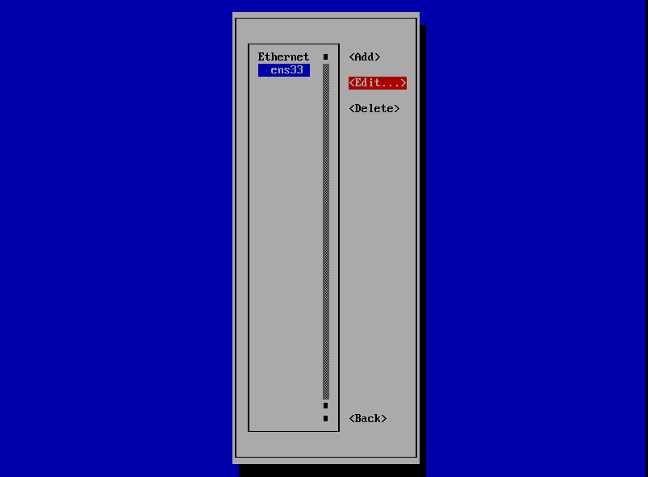
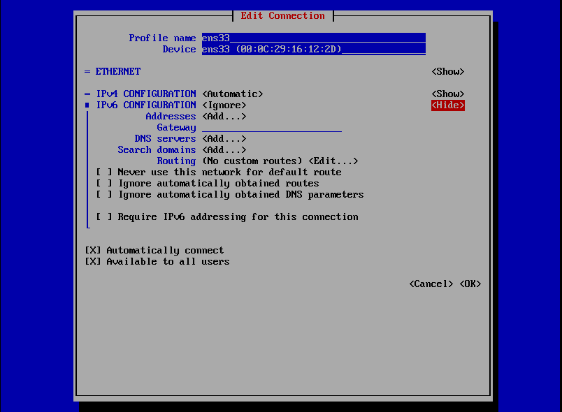

Configure Networking
Initially, the appliance will be configured for DHCP networking, which is sufficient for testing in fax loopback mode. However, a static IP address is recommended for production serversso that the IP address remains fixed across reboots. Furthermore, if you intend to use a third-party SIP provider, you may need to configure the server to use a public IP address in order to avoid any network address translation (NAT) traversal problems.
The appliance does not support NAT itself, and generally assumes all SIP proxies, registrars or peers will reside on the same local network segment. If you configure the appliance to connect to a SIP provider on some other remote network without taking any special precautions, the two devices will normally fail to communicate as the SIP provider is trying to reach the appliance on what it sees as its public IP, which is usually the IP of the company's firewall or edge router instead of the appliance.
Expert tip With careful planning and configuration it is possible to use SIP/NAT proxy tools, firewall DMZ features, or SIP application level gateways (ALGs) to handle the tracking and rewriting of SIP packets and allow HylaFAX to connect to a remote SIP provider from behind a NAT on a private LAN, but this should only be attempted after first testing the connection to this provider with the appliance on a globally-routable, public IP address.
To configure a static IP address, select the “Configure Network” option from the Advanced Options menu. Select “Edit Devices” and press ENTER. Select “eth0” or whatever the name of your adapter is and press ENTER.
 
Deselect “Use DHCP” and then enter the desired Static IP address, Netmask, and Default Gateway IP (not the SIP gateway) into the respective fields. Select OK and press ENTER, and then select “Save” and press ENTER to return to the Configure Network menu.

Next, you must setup DNS by selecting “Edit DNS configuration” and pressing ENTER. Enter the IP address of the Primary and Secondary(optional) DNS servers in the respective fields. Then select OK and press ENTER.
To save and apply your changes, select “Save & Quit” and press ENTER.